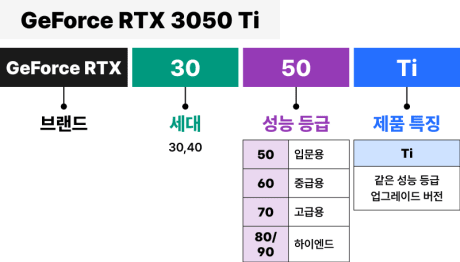

노트북 구매 가이드
예전에는 컴퓨터로만 할 수 있던 많은 일들이 점차 모바일 기기로 대체되고 있습니다.
그럼에도 여전히 큰 화면과 키보드를 갖춘 '진짜 컴퓨터'가 꼭 필요한 순간들이 있고,
최근에는 재택근무와 온라인 수업 등 비대면 수요까지 더해져 노트북의 인기는 이어지고 있습니다.
20만원부터 수백만원이 넘는 제품까지 가격대가 폭 넓고, 제품의 수가 매우 많은데다가
어려운 용어의 스펙정보로 어떤 노트북을 살지 고르는 것은 분명 만만치 않은 일인데요.
헷갈리는 용어와 스펙 어떻게 보면 되고, 어떻게 선택하면 좋을지 하나씩 알려드리겠습니다.
CPU / 메모리(RAM)
1. CPU의 원리
CPU의 성능을 결정하는 4가지 스펙
코어/스레드/클럭/캐시메모리
-
처리성능에서 가장 중요한 부품 업그레이드가 어려워 초기선택이 중요합니다.
CPU는 Central Processing Unit(중앙처리장치)의 약자로, 노트북의 '두뇌' 역할을 하는 장치입니다. -
코어는 동시에 처리하는 작업의 개수
4~6코어 중간급, 8~10코어 하이엔드급
코어는 CPU에서 연산을 담당하는 핵심 부품으로 코어라는 단위의 개수로 표기됩니다. -
스레드 수=코어 수x2배'가 일반적입니다.
스레드는 코어가 처리하는 하나의 작업 단위로 물리적인 부품이 아닌 일의 단위인데, -
클럭이 높을수록 속도가 빨라집니다. (단, 코어나 스레드가 같은 경우에만)
클럭은 CPU가 초당 실행하는 사이클 수로, 즉 CPU에서 코어가 일을 하는 속도입니다. -
캐시 메모리는 빠른 처리를 위한 임시저장 공간입니다.
캐시 메모리는 CPU 내부의 임시 데이터 저장공간으로, 코어와 함께 CPU를 구성하는 부품 중 하나입니다.
사람의 두뇌가 신체 각 부분이 움직이도록 명령을 내리듯이, 노트북의 중앙에서 필요한 모든 계산을 처리하여 각 부품들이 동작하도록 명령을 내립니다.
그만큼 노트북의 전반적인 성능을 좌우하는 핵심 부품입니다.
CPU의 성능은 세부스펙인 코어/스레드/클럭/캐시메모리로 판단할 수 있으며, 기본적으로 각 요소의 개수나 숫자가 높을수록 성능이 좋다고 볼 수 있습니다.
1개의 코어는 동시에 하나의 일만 처리할 수 있기 때문에 코어가 2개면 동시에 두 가지 일을 처리할 수 있어 여러 가지 작업을 동시에 한다면 속도가 빨라진다고 볼 수 있습니다.
1개를 뜻하는 싱글코어부터 듀얼(2개),쿼드(4개),헥사(6개),옥타(8개) 등으로 표기되는데,
4~6코어 정도면 중간급, 8~10코어 정도면 하이엔드급 노트북 CPU입니다.
스레드가 1개이면 한 손으로 할 일을 2개라면 양손으로 빠르게 처리하는 것과 유사한 개념입니다.
최근 출시된 CPU는 대부분 1코어당 2개의 스레드를 가지고 있으며, 동급 코어 제품 기준 저렴한 CPU는 1개를 포함하고 있기도 합니다.
클럭은 GHz 단위로 측정하며, 노트북에 탑재된 CPU에서는 클럭은 보통 1GHz~4GHz 정도이며 클럭이 높을수록 속도가 빠릅니다.
다만, 코어/스레드/캐시메모리 등이 동일한 경우에 클럭이 높을수록 속도가 빠르다는 의미로, 코어나 스레드의 개수가 다르다면 단순하게 클럭만으로 비교할 수는 없습니다.
동급의 코어나 스레드 기준 보통 1.5~2.5GHz 정도면 중간급이며, 3GHz이 넘어가면 고사양으로 볼 수 있습니다.
다만, 클럭은 CPU의 설계가 얼마나 효율적인가에 따라서도 큰 차이가 있기 때문에 클럭숫자가 비슷하다면 최신 CPU일수록 속도가 빠른 편입니다.
CPU는 주로 주기억장치인 램이 보관하고 있는 데이터를 불러와 연산 처리를 하고 그 결과를 모니터 등의 출력장치로 나타내는데,
CPU의 처리 속도만큼 램이 데이터를 빠르게 제공해 주지 못해서 성능 저하가 일어나는 것을 막기 위해,
자주 쓰는 데이터를 임시 보관할 목적으로 CPU 내부에 용량은 작지만 램보다 속도가 훨씬 빠른 캐시 메모리를 두고 있습니다.
캐시 메모리는 속도가 빠른 대신 용량당 가격이 매우 비싸기 때문에 CPU에 따라 작게는 2MB부터 큰 것도 24MB에 불과합니다.
캐시메모리 또한 용량 뿐 아니라 브랜드/세대에 따라 기술 구현 방식이 다르기 때문에 캐시 메모리로 성능을 추측하는 것은 동일한 브랜드/세대 내에서만 가능합니다.
2. CPU 선택법
일반/사무용은 코어i3,5/라이젠3,5
게임/그래픽용은 코어i5,7/라이젠5,7
-
제조사별 성능 차이는 크지 않지만, 가성비는 AMD가 좋습니다.
-
가장 비싼 부품 중 하나로 등급간 가격차이가 크게 납니다.
(오버스펙이 아닌 용도에 맞게 선택) -
인텔 코어i CPU넘버의 의미
-
MD 라이젠 CPU넘버의 의미(6세대까지)
-
AMD 라이젠 CPU넘버의 의미(2023년부터)
AMD 라이젠 시리즈의 CPU넘버의 세대를 보면, 3/4세대가 섞여있는 등 세대구분이 제대로 되지 않는 것을 확인할 수 있습니다. -
웹서핑이나 온라인 강의 용이라면 인텔 N라인, AMD 애슬론도 고려
코어i와 라이젠이 각 제조사를 대표하는 CPU 라인업이지만 40만 원 이하의 중저가형 노트북에는 인텔의 N 라인이나, AMD의 애슬론이 포함된 경우도 많습니다.
(인텔의 저가 CPU 라인인 셀러론, 펜티엄은 2022년 단종되었으며, intel N 라인으로 대체되었습니다.) -
CPU의 종합적인 성능을 숫자로 쉽게 비교할 수 있는 벤치마크 점수
코어, 스레드 등의 성능지표와 브랜드명/등급/세대로 CPU를 선택해도 충분합니다.
CPU의 성능을 결정하는 4가지 요소를 조합하여 각 제조사에서는 CPU 등급을 구분하여 라인업을 형성하고 있습니다.
애플의 맥북 시리즈를 제외하고, 시중에 판매중인 대부분의 노트북에는 인텔과 AMD 두 제조사의 CPU가 탑재되어 있습니다.
각 제조사의 동급 CPU 기준 제조사간 성능의 차이는 크지 않다는 것이 일반적인 의견인데, 전통적으로 인텔의 선호도가 높은 편이며, AMD는 가성비가 좋다는 평가를 받고 있습니다.

인텔과 AMD의 대표 브랜드는 각각 '코어i' 시리즈와 '라이젠' 시리즈로, 어느정도 괜찮은 성능의 노트북을 구매한다면 대부분 선택하게 되는 브랜드들입니다.
두 브랜드는 공통적으로 성능에 따라 3,5,7,9 네 등급으로 구분되며, 숫자가 높을수록 상위 라인업입니다.
등급 숫자는 각 제조사가 마케팅을 위해 독자적으로 구분한 것으로 정확한 성능의 차이를 나타내는 것은 아니지만,
대게 i3과 라이젠3를 동급으로 묶어 보급형, i5과 라이젠5는 중급형, i7와 라이젠7을 고성능, i9와 라이젠9을 하이엔드 CPU로 분류합니다.
용도에 따라 구분하면,
- 원활한 환경으로 웹서핑,사무작업과 저사양 게임 정도를 즐기고 싶다면 i3 / 라이젠3
- 취미생활 수준의 영상 편집과 왠만한 게임까지 고려한다면 i5 / 라이젠5
- 본격적으로 높은 옵션의 고사양 게임이나 그래픽 편집용이라면 i7 / 라이젠7
- 마지막으로 전문가 수준의 최고사양 작업과 개인 방송까지 염두한다면 i9 / 라이젠9을 선택하면 됩니다.
너무 낮은 등급을 선택하는 것도 좋지 않지만, 용도보다 높은 등급을 선택하면 제대로 활용하지 못하게 되는경우가 많습니다.
특히, CPU는 노트북에서 가장 비싼 부품 중 하나이며 등급간 가격차이가 크기 때문에 용도에 맞게 선택하는 것이 좋습니다.
각 제조사별 대표 CPU를 내세운 경쟁관계에 있다보니 모델명인 CPU넘버 구성도 거의 유사한 편으로,
공통적으로 CPU 넘버에서는 브랜드 등급,세대와 함께 세부 성능지표와 제품 특징까지 4가지 정보를 알 수 있습니다.
세부 성능지표는 동일 브랜드/등급/세대 내의 각 제품별 성능을 구분하기 위한 지표로 높을수록 고성능이며, 제품 특징은 내장그래픽 유무,
오버클럭 가능여부 등 각 제품의 고유한 특징을 뜻하는데, 노트북 구매시 가장 많이 볼 수 있는 특징은 상대적으로 낮은 성능의 모바일용 저전력 CPU를 표현하는 'U'가 있습니다.
AMD 라이젠 시리즈의 CPU넘버도 인텔과 동일하게 브랜드 등급,세대,성능지표 4가지 요소를 공통적으로 나타내며,
성능 등급 정보가 추가로 포함되어 있습니다.
1~3은 일반 성능, 4~6은 고성능, 7과 8은 최고성능을 의미하는데, 1~3은 라이젠 3, 4~6은 라이젠5, 7과 8은 라이젠7,9 제품이라고 봐도 무방합니다.
이런 혼란을 없애기 위해 2023년부터 AMD의 CPU 넘버링 방식이 변경되었습니다.
코어i나 라이젠과 비교하면 명백한 성능 차이가 있지만, 간단한 문서작업이나 웹서핑, 동영상 강의 시청 등의 용도로 사용하기엔 무리가 없는 수준으로,
저렴한 가격으로 간단한 용도의 노트북을 찾는다면 여전히 유효한 선택지가 될 수 있습니다.
다만, 다양한 세부 라인업이 있고, 제조사/세대간 성능 차이도 있어 실제로 어떤 CPU가 얼마나 뛰어난지를 비교해보고 싶은 분들도 있습니다.
이럴 때 각 제품의 벤치마크 점수를 확인하면 CPU간 상대비교를 할 수 있습니다.
벤치마크 점수란 일련의 테스트 및 시뮬레이션을 통해 CPU의 성능을 점수화 한 것으로 정확한 값이라고 하기는 어렵지만 CPU간의 상대 비교에 많이 활용되고 있습니다.
테스트 툴은 CPU의 전반적 연산능력을 측정하거나, 3D게임 그래픽 등 특정 항목을 측정하는 툴, 그리고 게임을 통한 측정 등 다양하게 존재하는데,
종합 성능과 CPU별 직관적인 상대 비교에 용이한 'Geekbecnch', 'Passmark'가 가장 많이 쓰이는 툴 중에 하나입니다.
3. 램(RAM)
최소 8GB 이상을 추천
동시작업이 많다면 16GB 이상
-
처리속도를 높여주는 또다른 핵심부품입니다.
-
CPU와 저장장치를 이어주는 중간단계
-
용량 부족하면 가장 크게 체감되는 부품
기본적으로 공간 제공의 역할을 하기 때문에 속도만을 중시하는 CPU와 달리, 램은 용량 크기가 가장 중요합니다. -
일반/사무용도 최소 8GB 이상
고사양 게임과 그래픽을 염두한다면
최소 16GB 이상 추천
부팅 프로세스부터 이미 1GB가량 램 용량을 차지하고, 노트북에 많이 쓰이는 내장그래픽에도 비슷한 용량이 할당 되기때문에 4GB 이하의 램은 피하는 것이 좋습니다. -
용량 다음으로 중요한 클럭(대역폭)
2666(21300) 이상을 추천 -
같은 용량이라도 듀얼 구성이 유리함
즉, 8GB 2개가 16GB 1개보다 빠름
듀얼 채널 구성이란, 같은 용량이라도 큰 용량 1개가 아닌 작은 용량 2개의 메모리를 사용하는 것입니다. -
현재 대부분의 노트북은 DDR4
고사양 위주로 DDR5도 출시되는 추세
램을 보면 가장 먼저 보이는 정보 중 하나가 DDR4, DDR5와 같은 메모리의 종류인데, 한 번에 주고 받을 수 있는 데이터의 개수를 기준으로 구분한 것으로, DDR은 한 번에 2개씩, DDR2는 4개, DDR3와 DDR4는 8개씩 데이터를 주고 받을 수 있는 것이 대표적인 차이점입니다.
램(RAM)은 'Random Access Memory'의 약자로, CPU가 처리 중인 모든 데이터를 저장하는 곳으로 '주기억장치'라고 합니다.
램의 역할을 이해하기 위해 먼저 'Memory(메모리)'라는 용어부터 살펴보면, 일반적으로 컴퓨터의 작업 과정은
1. CPU가 '메모리'라는 기억장치에 저장되어 있는 데이터를 불러와 연산 처리를 하고
2. 그 결과를 모니터 등의 출력장치로 보여주는 방식입니다.
CPU의 처리 속도에 비해 메모리의 데이터 제공 속도는 훨씬 느리기 때문에 성능 저하가 생기게 됩니다.
따라서 가장 느린 메모리(HDD,SSD)와 CPU 사이에 중간 단계로 빠른 속도를 가진 또 다른 메모리들을 위치시켜 CPU가 자주 쓰는 데이터를 임시로 저장하여,
속도 차이에 따른 병목현상을 완화해주는데 이것을 '메모리 계층'이라고 합니다.
앞에서 설명한 CPU에 포함된 캐시 메모리도 이러한 메모리 계층 중 하나이며, 램은 캐시 메모리보단 느리지만 큰 용량을 가지고 SSD나 HDD에서 데이터를 받아 임시 보관하다가, 필요시 CPU에게 전달하는 메인 메모리 역할을 하기 때문에 주기억장치라고 합니다.
가장 느리지만 용량 또한 가장 커서 데이터를 보관하는 역할만 하는 SSD,HDD를 보조기억장치 혹은 저장장치라고 합니다.
보조기억장치(HDD,SSD)는 은행, 램은 집 앞에서 쉽게 이용할 수 있는 ATM기, 캐시메모리는 가지고 다니는 지갑 정도로 이해하면 쉽습니다.
참고로 각 메모리 계층의 속도를 CPU와 비교해보면, 저장장치 HDD는 CPU보다 약 250만배, SSD 역시 약 6만배 느리며, 램은 그보단 훨씬 빠르지만 여전히 약 250배 느리고, 캐시 메모리(L3)도 약 60배 느린 수준입니다.
충분한 용량으로 미리 CPU가 필요한 데이터를 보관하지 못하면, 가장 속도가 느린 저장장치에서 자주 데이터를 불러와야 하기때문에 전체 속도가 느려집니다.
따라서, 램은 용량이 부족하면 가장 크게 체감되는 부품이며 여러가지 작업을 할 때, 즉 노트북의 멀티태스킹 성능에 가장 크게 영향을 주는 부품 중 하나입니다.
하지만 마찬가지로 필요보다 과한 용량은 어차피 사용되지 않고 쉬기 때문에 용도와 작업 수준에 맞는만큼만 선택하면 됩니다.
여러 창을 띄우고 웹서핑을 하거나, 여러 개의 Excel 파일을 원활하게 동시에 작업하기 위해서는 8GB, 고화질 영상시청이나 게임, 영상편집, 방송까지 염두한다면 16GB와 32GB를 추천하며, 64GB 이상의 램은 특별한 목적이 아니라면 과할 가능성이 높습니다.
23년 1월 기준, 동일 노트북의 램 8GB/16GB간 가격차이가 5~10만원 내외임을 감안하면 향후 다양한 활용을 염두하여 넉넉한 16GB를 사는 것도 괜찮은 선택일 수 있습니다. 또한 현재 가장 널리 쓰이는 윈도우 운영체제는 남는 램 용량을 디스크 캐시 등으로 적극 활용하므로 16GB가 체감 성능도 나을 수 있습니다.
대개 컴퓨터가 처음보다 느려졌다고 느낄 때 램 용량을 늘리는 경우가 많은데, 실제 즉각적으로 입력하는 글자가 더 빠르게 표시되거나 갑자기 작동을 멈추는 일도 확 사라지는 것을 자주 경험하기도 합니다.
램의 또 다른 중요 성능지표로 램 동작 클럭(대역폭)이 있는데, 용량이 충분한 공간에 대한 개념인 반면, 동작 클럭은 직접적인 속도에 영향을 주는 지표입니다.
동작클럭은 CPU클럭과 마찬가지로 램의 동작 속도를 뜻하며, 통상 MHz 단위로 표현합니다.
클럭이 아닌 대역폭으로 표기를 하기도 하는데, 대역폭은 한 번에 전송할 수 있는 데이터의 양으로 'Byte'단위로 측정하기 때문에 환산하면 '동작클럭x8=대역폭'이 됩니다. 즉, 클럭 2666과 대역폭 21300(=2666x8)은 동일한 스펙입니다.
간혹 숫자가 딱 떨어지지 않는 경우 반올림이나 내림을 하는 경우도 있지만 같은 값을 나타냅니다.
동일한 예산에서 큰 용량을 선택하는데 우선순위를 두고, 이후 가능한 범위에서 높은 대역폭을 선택하는 것이 좋습니다.
예를 들어 16GB 메모리 용량을 위해서는 16GB짜리 1개를 사용할 수도 있지만, 8GB 2개를 사용할 수도 있는 방식인데, 이 경우 각 램의 대역폭이 같다면 용량은 동일하게 16GB지만 대역폭이 2배 높아지게 됩니다.
듀얼 채널 구성 시, 정확히 2배의 성능이 되는 것은 아니나 의미 있는 성능 향상이 생기며 특히, 별도 GPU 없이 내장그래픽을 쓰는 경우 RAM 용량을 비디오램처럼 공유해서 사용하는데 GPU는 메모리 대역폭에 예민하기 때문에 실제 성능 차이가 발생하기도 합니다.
최근 사용되는 메모리는 대부분 DDR4이며, DDR3와 한 번에 주고 받을 수 있는 데이터는 8개로 같지만, 동작 클럭에서 차이가 난다고 이해하면 됩니다.
현재, 대부분 DDR4를 사용중이며, 고사양 노트북 위주로 DDR5 역시 출시되고 있는 추세입니다.
※LPDDR(Low Power DDR)은 모바일용 저발열, 저전력 버전의 RAM입니다.
그래픽카드 / 저장장치
1. 그래픽카드
일반/사무용은 내장그래픽도 충분
외장 그래픽은 꼭 필요한 경우에만 선택
-
처리결과를 화면으로 보여주는 장치
노트북의 기본적인 기능 중에는 사용자의 요청에 따라 데이터를 처리하는 연산 기능과 함께, 그 결과를 글자/사진/영상으로 화면에 띄워주는 출력 기능도 있는데 이 일을 담당하는 장치가 바로 그래픽카드입니다. -
특별한 용도가 아니라면
내장 그래픽카드도 충분함
GPU 형태는 크게 내장그래픽과 외장 그래픽카드로 나뉩니다. -
외장 그래픽카드는 비싸고 무거움
고사양 게임과 그래픽 작업용으로 추천
외장 그래픽카드는 CPU는 물론 종종 외장 그래픽카드를 제외한 노트북 전체 가격보다 비쌀 정도로 고가의 부품입니다. -
클럭, 메모리타입/용량이 존재
숫자가 클수록 최신세대일수록 고성능
그래픽카드도 CPU나 램과 마찬가지로 클럭, 메모리 타입, 용량의 세부스펙이 존재합니다. -
동일한 GPU의 경우
제조사간 성능차이는 크지 않음
외장 그래픽카드는 대부분 NVIDIA와 AMD의 제품으로, NVIDIA가 약 80% 시장 점유율을 가진 1위 제조사입니다. -
고사양 게임이나 그래픽 작업용이라면
지포스 RTX, 라데온 RX 6000번대 이상 추천
가장 많이 사용하는 GPU는 NVIDIA의 지포스(GeForce)와 AMD의 라데온(RADEON) 입니다. -
지포스 그래픽카드 모델명 읽는 법
 -
라데온 그래픽카드 모델명 읽는 법
-
CPU와 마찬가지로 벤치마크 점수를 통해
상대적인 성능을 비교할 수 있음
GPU는 CPU와 마찬가지로 다양한 성능의 많은 제품이 존재하고 모델명을 통해 대략적으로 성능은 판단할 수 있으나, 모델 간 상대비교가 어려운데 GPU도 벤치마크 점수가 있습니다.
좋은 그래픽 카드를 사용할수록 고화질의 이미지를 빠르게 보여주고, 화려한 그래픽의 고사양 게임도 부드럽게 돌아가는 등 게임이나 그래픽/영상 관련 작업 성능을 결정하는 중요 장치입니다.
과거에는 CPU가 연산 처리한 데이터를 단순히 출력만 해주던 그래픽 카드가 그래픽 관련 연산까지 직접하도록 기능이 늘어나게 되었는데, 그래픽카드 내에서 이 연산의 역할을 담당하는 핵심 부품이 GPU이며 그래픽카드를 흔히 GPU라고 부르기도 합니다.
특히, 고화질의 이미지/영상, 3D 게임이 보편화된 요즘은 CPU만큼 중요한 역할을 하는 부품으로 여겨지고 있습니다.
내장그래픽은 CPU내에 GPU가 포함되어 있는 형태로, 문서 작업과 웹서핑, 간단한 동영상 시청 등의 용도로 사용됩니다.
높은 수준의 게임과 그래픽 작업 용도가 아니라면 내장그래픽만으로도 사용에 지장이 없기 때문에 대부분의 노트북에서 사용되는 GPU 형태입니다.
내장그래픽 제조사는 CPU 제조사와 동일하게 인텔과 AMD가 있으며, 일반적으로 AMD의 내장그래픽 성능이 뛰어난 편입니다.
인텔 CPU는 일부 모델을 제외하고 대부분 내장그래픽이 탑재되어 있으며(F가 붙은 CPU 모델 제외), AMD CPU는 G가 붙은 몇 개 CPU 모델과 모바일용 CPU에만 내장그래픽이 탑재되어 있습니다.
일반적으로 코어i3-12세대와 라이젠5-4세대 이상의 CPU에 탑재된 GPU라면 LOL, 피파4 정도의 고사양이 필요하지 않은 게임도 어느정도 할 수 있습니다.
23년 1월 기준 낮은 등급의 제품도 40만원대, 중간급은 60~80만원, 고사양이라면 100만원은 기본으로 넘어가기 때문에 예산도 큰 폭으로 올라갑니다. 또한 보통 50~300g의 무게가 추가되기 때문에 노트북을 휴대성을 낮추는 요소이기도 합니다.
외장 그래픽카드는 본격적인 고사양 게임과 영상/그래픽 작업용 노트북에선 필수적이지만, 반대로 일반/사무용 노트북에선 없어도 지장이 없는 부품이기 때문에 용도에 따라 꼭 필요한 경우에만 선택하는 것이 좋습니다.
클럭과 용량은 단위도 동일하게 초당 클럭수인 MHz로, 용량은 GB로 표기하는데 숫자가 높을 수록 고성능입니다.
세대에 따른 성능도 최신세대일수록 좋으며, 현재는 GDDR6X가 최신세대입니다.
그런데 막상 제품의 이름을 보면 두 제조사가 아닌 다양한 회사의 이름을 볼 수 있는데, 이는 외장 그래픽카드가 몇 단계의 제조 과정으로 나뉘어 만들어지기 때문입니다.
1. NVIDIA와 AMD는 그래픽카드의 핵심 부품인 GPU의 설계사이고
2. TSMC, 삼성전자 등의 파운드리 업체가 설계된 GPU를 위탁 생산하며
3. ASUS나 GIGABYTE,이엠텍 등의 제조사가 이를 공급받아 본체인 기판에 얹고, 쿨링팬 등 추가 부품을 더해 완제품을 제작하는 방식입니다.
이 때 GPU 설계사가 완제품까지 설계한, 즉 설계사의 표준 가이드에 따라 만들어진 제품을 '레퍼런스'라고 하고, 표준 가이드를 따르지 않고 완제품 제조사가 기판을 자체 설계하여 만든 제품을 '비레퍼런스'라고 부르며, 시중에 판매되고 있는 제품은 대부분 '비레퍼런스'입니다.
두 제품은 자동차 순정과 튜닝제품의 차이 정도로 이해하면 되는데, 일반적으로 비레퍼런스의 성능이 더 높지만 큰 차이는 없으며, 레퍼런스의 안정성 장점도 있기 때문에 무엇이 더 낫다고 정하긴 어려우며, 동일한 GPU 기준 저렴한 제품을 구매하는 것이 좋습니다.
사실상 노트북 스펙에 그래픽카드는 제조사와 레퍼런스와 비레퍼런스를 표기하지 않는 경우가 대부분이기 때문에 그래픽카드 업그레이드 시에 참고하실 수 있는 내용입니다.
현재 노트북에 사용되는 라인업은 지포스의 RTX, MX시리즈, 라데온의 RX가 대부분입니다.
RTX시리즈는 내장그래픽과 확연히 구분되는 본격적인 고사양 GPU입니다.
MX시리즈는 노트북에서 주로 쓰는 저전력 GPU로 일반적으로 내장그래픽보다는 낫지만 고사양 게임과 작업은 어려운 제품입니다.
라데온 RX는 숫자로 성능이 구분되는데 60 이상의 숫자로 시작하면 보통 RTX급, 그 이하면 MX급으로 볼 수 있습니다.
RTX 시리즈의 각 제품은 브랜드/세대/성능/세부특징별 일정한 규칙에 따라 네이밍 됩니다.
GTX 1050 Ti 와 RTX 2070 Super 두 제품을 예시로 보면,
1.앞의 숫자 두자리는 제품의 세대를 나타냅니다. RTX는 30과 40까지 출시되었으며 RTX 각 시리즈 내에서 높을수록 최신 세대입니다.
→ RTX 3050=30세대, RTX 4070 Ti=40세대
2.뒤의 숫자 두자리는 성능을 나타내는 등급지표로 RTX 모두 50~90의 사이의 숫자를 사용합니다. 높을수록 높은 성능이며, 50은 입문용 엔트리급, 60은 중급용, 70은 고급용이며, 80과 90은 하이엔드 최고급 사양입니다.
오버워치 등 일반적인 3D게임 기준으로, 60은 되어야 진행이 가능하며, 70이면 높은 옵션, 80이상은 풀옵션이 가능한 수준입니다.
→ GTX 3050=입문용 엔트리급, RTX 4070 Ti=고급용
3.끝의 영문은 성능을 세부 구분하는 지표로, 동일 등급에서 성능이 일부 업그레이드 되었음을 나타냅니다. Ti가 사용되며 보통 각 제품이 해당하는 등급과 윗 등급 사이 정도의 성능을 가집니다.
→ RTX 3050 Ti=3050과 3060의 사이 성능
보통 RTX 3050 이상이면 풀옵션 배틀그라운드 같은 고사양 게임과 FHD 해상도의 영상편집도 어느정도 가능한 편이고, 풀옵션의 트리플 A급 고사양 게임이나 3D작업까지 염두한다면 RTX 3070 이상의 GPU를 추천드립니다.
※AAA(트리플 A)급 게임이란? : 많은 제작비를 바탕으로 고퀄리티 게임을 제작하여 글로벌 출시로 높은 판매량을 기대하고 만든 게임으로 성능 요구사항이 높은 게임이 많습니다. 유명한 AAA급 게임은 그래픽카드의 성능 측정 지표로 사용되기도 합니다.
라데온 RX 시리즈는 세부 제품에 따라 규칙이 일정하지 않은 편이지만, 공통적으로 브랜드,세대,성능,특징에 따라 네이밍 됩니다.
대표적인 GPU 벤치마크 사이트는 3D Mark, PassMark, UserBenchMark 등이 있는데, 노써치에서는 PassMark 점수를 활용하여 외장 그래픽뿐 아니라 내장그래픽까지 각 노트북별로 탑재된 GPU 점수를 제공하고있으니 구매를 고려하고 있는 노트북의 GPU점수가 어느정도 되는지 편리하게 확인해보시길 바랍니다.
2. 저장장치(스토리지)
최소 SSD 256GB는 확보하는 것이 좋음
용도나 예산에 따라 용량 추가
-
데이터를 보관하는 창고
저장장치(스토리지)는 보조기억장치로, 용어 그대로 데이터를 보관하는 창고 역할을 합니다. -
현재 대부분의 저장장치는 SSD
-
SSD가 HDD에 비해 훨씬 빠름
내구성과 작은 부피도 장점 -
용량은 최소 256GB, 최대 1TB 추천
2TB부터는 가격이 비싸짐
SSD의 용량은 GB(기가바이트), TB(테라바이트) 단위로 표현하는데, 1TB는 1024GB를 의미하는 것으로 1TB부터는 TB단위로, 1TB 이하는 GB로 표기됩니다. -
큰 용량이 필요하다면
확장 슬롯이 있는지 확인
노트북은 완성된 제품이라 CPU나 GPU의 업그레이드는 쉽지 않지만, RAM이나 저장공간 용량은 빈 슬롯이 있어 부품을 추가하면 성능 업그레이드가 가능하기도 합니다. -
큰 용량이 필요하다면
HDD를 추가 옵션으로 선택
빠른 속도와 내구성 등 많은 장점이 있지만, 높은 가격과 그로 인해 큰 용량 확보가 어렵다는 점은 SSD의 단점입니다.
용량은 작지만 CPU와의 소통을 위한 빠른 속도를 가지고 있는 램(RAM)과 달리, 데이터의 보관이 주목적인 저장장치는 속도는 느리지만 아주 큰 용량 가지고 있으며 용량당 가격도 훨씬 저렴합니다.
그리고 램은 전원이 꺼지면 기록을 모두 삭제하지만, 저장장치는 전원이 꺼져도 데이터가 사라지지 않아 사용자가 데이터를 삭제하지 않는 이상 반영구적으로 보존됩니다.

저장장치에는 대표적으로 HDD와 SSD가 있습니다.
요즘도 종종 저장장치를 '하드'라고 부르는 경우가 있는데, 하드란 'Hard Disk Drive'의 약자인 HDD를 간단히 나타내는 표현입니다.
HDD는 이렇게 저장장치의 대명사로 쓰일만큼 대표적인 저장장치였지만, 현재는 SSD가 일반적으로 쓰이는 저장장치이며 따라서 저장장치를 단순히 '하드'라고 칭하지 않는 추세입니다. (SSD는 '스스디'라고 부르기도 합니다.)
SSD와 HDD의 차이점은 대부분 두 장치의 작동방식(구조) 차이에 있습니다.
HDD는 바늘 모양 헤드가 원판 모양의 회전하는 플래터에서 파일을 읽거나 쓰는 방식의 기계적 장치인데, SSD는 반도체 기반의 전자적 장치이기 때문에 동작 시 움직임이 전혀 없습니다. SSD의 이름 역시 HDD와 대비하여 'Solid State Drive', 즉 '가만히 있는 상태'로 동작한다는 의미로 지어졌습니다.
이러한 작동 방식 차이 때문에 두 저장장치는 데이터를 읽고 쓰는 속도에서 큰 차이가 있습니다.
실제로 HDD를 SSD로 교체하면 파일이 열리는 속도부터 웹서핑, 심지어 부팅 시간까지 체감 될 정도로 속도가 빨라지는 것을 경험할 수 있는데, SSD의 데이터 처리속도는 HDD보다 100배 이상 빠르고, 다른 요소가 동일하다면 노트북의 부팅 속도 기준으로도 2~3배 가량 빠른 편입니다.
또한 과거 '하드가 망가졌다'라는 이야기를 자주 들을 수 있었을 정도로 내구성은 HDD의 치명적인 약점인데, SSD는 기계적 작동부가 없어 충격과 진동에 훨씬 강하고, 자기장에도 안전합니다. 실제 HDD는 1m의 높이에서 떨어뜨리는 정도의 충격에도 쉽게 고장날 가능성이 크지만, SSD는 왠만한 충격도 문제 없이 버팁니다.
그리고 SSD는 미세공정 적용이 용이해 HDD에 비해 상대적으로 작은 무게와 부피를 가지고 있어, 특히 데스크탑에 비해 들고 다닐 일이 많은 노트북에서 필수 저장장치로 자리 잡았습니다.
SSD의 유일한 단점은 가격으로, 같은 용량의 HDD 대비 3~5배가량 비쌉니다.
현재 판매되는 노트북의 SSD 용량은 128GB에서 4TB(4096GB) 이상까지 다양한데, 필요한 만큼만 선택하는 것이 좋습니다.
다만, 필수 운영체제와 기본 소프트웨어에 몇 개의 파일만 추가해도 4~50GB는 넘어가며, 용량이 많이 찰수록 성능 저하가 발생하기때문에, 보통 20~30%의 여유 공간은 비워두는 것을 추천하며 원활한 사용을 위해 256GB는 기본적으로 확보하고 필요에 따라 그 이상의 용량을 선택하는 것을 추천 드립니다.
다만, 2TB 부터는 가격대가 크게 높아지기 때문에 최대 1TB 이내에서 선택하는 것을 추천드립니다.
또한, 용량은 추후 교체나 외장 스토리지, 클라우드 서비스까지 부족할 때 보충할 수 있는 여러 대안들이 있기 때문에 용량 자체를 처음부터 욕심을 낼 필요가 없기도 합니다.
대용량 작업을 주로 하시거나, 오랜 기간 노트북을 사용할 예정이라 저장공간이 더 필요하게 되는 경우도 염두에 두고 있다면, SSD를 추가로 꽂을 수 있는 빈 슬롯이 있는 제품을 고려해 보는 것이 좋습니다.
반면 HDD는 저렴한 가격으로 TB 단위의 큰 공간을 쉽게 확보할 수 있기 때문에 고용량 영상/사진 작업용 노트북에선 SSD에 추가로 HDD를 더하는 옵션을 선택할 수 있습니다. 단, 그만큼 무게가 늘어 나는 것은 감안해야 합니다.
HDD를 추가한 경우라면 원활한 작업 환경을 위해 SSD와 HDD를 분리하여 활용하는 것이 좋습니다.
즉, 빠른 부팅과 로딩을 위해 운영체제(OS)를 포함한 기본 소프트웨어와 자주 사용하는 실행 프로그램은 SSD에 설치하고, HDD는 사진과 영상 등의 고용량 데이터 저장공간으로만 사용하는 것이 좋습니다.
화면
1. 화면크기
휴대가 중요하면 14인치 이하
가장 대중적인 15인치
데스크탑 대용은 16인치 이상도 추천
-
처리결과를 화면으로 보여주는 장치
-
처리결과를 화면으로 보여주는 장치

노트북의 화면크기는 대각선의 길이를 인치로 표기하는데, 현재 판매중인 노트북의 화면 크기는 보통 13인치~17인치대에 형성되어 있습니다.
노트북의 화면 크기가 클수록 한 눈에 확인할 수 있는 창이 커지기 때문에 작업 효율이 올라가고, 게임을 하거나 영상을 시청할 때에도 훨씬 더 실감나게 즐길 수 있습니다.
하지만 화면이 커지면 당연히 무게와 부피가 커지기 때문에 노트북에서 화면 크기는 '휴대가 가능한 범위에서 클수록 좋다'라고 보는 편이 좋습니다.
대표적인 11개 제조사 2500개의 제품을 살펴보면, 13인치 제품은 평균 1~1.2kg, 17인치 제품은 2.4~2.6kg 정도로 크기에 따라 2배 가까이 무게차이가 발생하기도 합니다. 국내 삼성/LG의 경량화된 제품은 훨씬 가벼운 모델도 있으며, 이러한 차이는 물론 100% 화면 크기에 따른 것은 아니지만, 일반적으로 화면 크기가 무게에 가장 큰 영향을 주는 요소입니다.
즉, 노트북 화면 크기는 기본적으로 필요한 작업 용도에 맞게 고르되, '얼마나 자주 들고 다닐 것인가?'를 기준으로 판단해보는 것이 바람직합니다.
노트북의 화면크기는 대각선의 길이를 인치로 표기하는데, 현재 판매중인 노트북의 화면 크기는 보통 13인치~17인치대에 형성되어 있습니다.
노트북의 화면 크기가 클수록 한 눈에 확인할 수 있는 창이 커지기 때문에 작업 효율이 올라가고, 게임을 하거나 영상을 시청할 때에도 훨씬 더 실감나게 즐길 수 있습니다.
하지만 화면이 커지면 당연히 무게와 부피가 커지기 때문에 노트북에서 화면 크기는 '휴대가 가능한 범위에서 클수록 좋다'라고 보는 편이 좋습니다.
대표적인 11개 제조사 2500개의 제품을 살펴보면, 13인치 제품은 평균 1~1.2kg, 17인치 제품은 2.4~2.6kg 정도로 크기에 따라 2배 가까이 무게차이가 발생하기도 합니다. 국내 삼성/LG의 경량화된 제품은 훨씬 가벼운 모델도 있으며, 이러한 차이는 물론 100% 화면 크기에 따른 것은 아니지만, 일반적으로 화면 크기가 무게에 가장 큰 영향을 주는 요소입니다.
즉, 노트북 화면 크기는 기본적으로 필요한 작업 용도에 맞게 고르되, '얼마나 자주 들고 다닐 것인가?'를 기준으로 판단해보는 것이 바람직합니다.
휴대성
1. 화면크기
휴대가 중요하면 14인치 이하
가장 대중적인 15인치
데스크탑 대용은 16인치 이상도 추천
-
처리결과를 화면으로 보여주는 장치
노트북의 화면크기는 대각선의 길이를 인치로 표기하는데, 현재 판매중인 노트북의 화면 크기는 보통 13인치~17인치대에 형성되어 있습니다.
노트북의 화면 크기가 클수록 한 눈에 확인할 수 있는 창이 커지기 때문에 작업 효율이 올라가고, 게임을 하거나 영상을 시청할 때에도 훨씬 더 실감나게 즐길 수 있습니다.
하지만 화면이 커지면 당연히 무게와 부피가 커지기 때문에 노트북에서 화면 크기는 '휴대가 가능한 범위에서 클수록 좋다'라고 보는 편이 좋습니다.
대표적인 11개 제조사 2500개의 제품을 살펴보면, 13인치 제품은 평균 1~1.2kg, 17인치 제품은 2.4~2.6kg 정도로 크기에 따라 2배 가까이 무게차이가 발생하기도 합니다. 국내 삼성/LG의 경량화된 제품은 훨씬 가벼운 모델도 있으며, 이러한 차이는 물론 100% 화면 크기에 따른 것은 아니지만, 일반적으로 화면 크기가 무게에 가장 큰 영향을 주는 요소입니다.
즉, 노트북 화면 크기는 기본적으로 필요한 작업 용도에 맞게 고르되, '얼마나 자주 들고 다닐 것인가?'를 기준으로 판단해보는 것이 바람직합니다.
대제목
1. 중제목
설명
-
소제목

본문